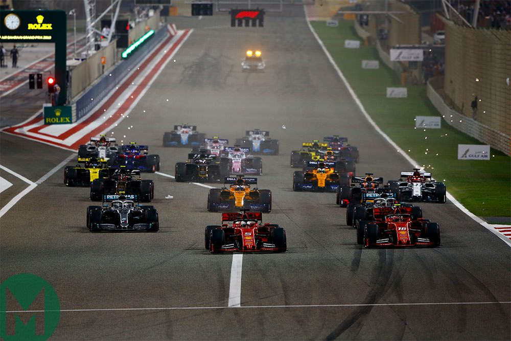

On Sunday, Max Verstappen took victory in the season opening Bahrain Grand Prix at the ninth time of asking while Red Bull picked up a one-two thanks to Sergio Perez – and the reigning champion was clearly elated at his winning start.
Verstappen led from lights out, swapping his starting set of softs for another set on Lap 14 before switching to hards on Lap 36, to win the Bahrain Grand Prix by 11 seconds over team mate Perez. The two-time champion never looked threatened for the lead, and now has 25 points to his tally as he seeks a third title.

Bahrain starting grid
Sunday's podium:
Name
Starting place
Finishing place
Max Verstappen
1
1
Sergio Perez
2
2
Fernando Alonso
5
3
Driver of the day votes finished!
Most popular votes for driver of the day:
Fernando Alonso
Max Verstappen
Carlos Sainz
Perez says losing P2 at the start meant 'game over' for his victory hopes in Bahrain
Sergio Perez was pleased to back up Max Verstappen in a Red Bull one-two as the team enjoyed a perfect start to the season in Bahrain – but the Mexican driver wasn’t so happy to finish 11 seconds off his team mate.
Next race
Get up to speed with everything you need to know about the 2023 Saudi Arabian Grand Prix, which takes place at the Jeddah Corniche Circuit on Sunday, March 19.